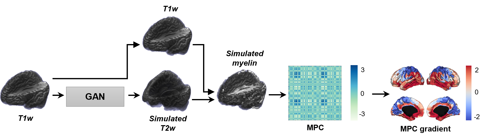

Welcome to GAN-MAT
GAN-MAT: Generative Adversarial Network-based Microstructural profile covariance Analysis Toolbox
{kind=link}
GAN-MAT is a comprehensive pipeline to analyze brain microstructure using only the T1-weighted MRI.
Three main features of GAN-MAT:
1. T1w to T2w MRI synthesis
GAN-MAT synthesizes 3D T2-weighted MRI from 3D T1-weighted MRI using a generative adversarial network (GAN).
2. Myelin-sensitive proxy calculation
Using the synthesized T2-weighted MRI, it calculates the ratio between T1- and T2-weighted MRI.
3. Microstructural profile covariance and gradient generation
The ready-to-use microstructural profile covariance (MPC) matrix and its gradient are generated.
Core developers
Yeong Jun Park, CAMIN Lab - Inha University
Bo-yong Park, CAMIN Lab - Inha University
& the team
Seulki Yoo, CAMIN Lab - Inha University
Chae Yeon Kim, CAMIN Lab - Inha University
Jong Young Namgung, CAMIN Lab - Inha University
Yunseo Park, CAMIN Lab - Inha University
Hyunjin Park, MIPL - Sungkyunkwan University
Eunjung Lee, Poderosa
Yeodong Yun, Poderosa
Casey Paquola, Multiscale Neuroanatomy Lab - INM-1 at Forschungzentrum Juelich
Boris Bernhardt, MICA Lab - Montreal Neurological Institute